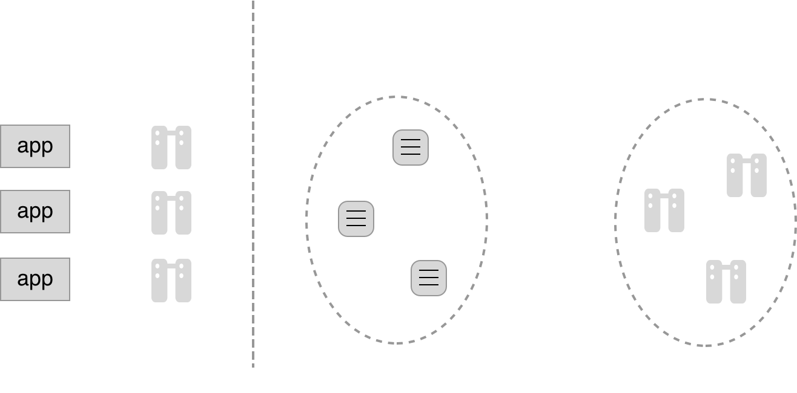

Docker for Enterprise Developers
How We Teach
- Docker believes in learning by doing, with support.
- The course is lab driven with lecture.
- Work together
- Ask questions at any time
Session Logistics
- 2 days duration
-
mostly exercises
- Take time to read the code examples closely
- regular breaks
Assumed Knowledge and Requirements
- Familiarity with using the Linux command line
- A UCP License (download one at https://store.docker.com/bundles/docker-datacenter/purchase?plan=free-trial)
- You should know the basics of Docker
- Run a Docker container
- Search for and pull images from Docker Store
- Use Docker for Mac / Windows on your local machine
Your lab environment
- You have been given several instances for use in exercises.
- Ask instructor for access credentials if you don't have them already.
Course Learning Objectives
By the end of this course, learners will be able to:
- Describe the essential patterns used in a highly distributed EE application
- Understand how to configure EE applications for different environments without code change
- Produce and containerize scalable, accessible, and fault-tolerant EE applications
- Apply different debugging and testing techniques to containerized EE applications
 Distributed Application Architecture
Distributed Application Architecture
Learning Objectives
By the end of this module, learners will be able to:
- Describe how familiar design patterns relate to containerized applications
- Enumerate key challenges in containerized application design
Distributed Application Architecture
Definition: An application consisting of one or more processes running on one or more nodes.
Services over Processes
Clusters over Nodes
Characteristics & Requirements
- Bandwidth and latency
- Ephemeral components
- Stateless versus stateful
- Service discovery
- Load balancing
- Health checking
- Logging and monitoring
- Circuit breakers
Bandwidth & Latency
| Action | Real Time | Scaled Time |
| 1 CPU Cycle | 0.3 ns | 1 s |
| Level 1 cache access | 0.9 ns | 3 s |
| Level 2 cache access | 2.8 ns | 9 s |
| Level 3 cache access | 12.9 ns | 43 s |
| Main memory access | 120 ns | 6 min |
| Solid state disk I/O | 50-150 us | 2-6 days |
| Rotational disk I/O | 1-10 ms | 1-12 months |
| Internet: SF -> NYC | 40 ms | 4 years |
| Internet: SF -> UK | 81 ms | 8 years |
| Internet: SF -> Australia | 183 ms | 19 years |
| OS Virtualization Reboot | 4 s | 423 years |
| SCSI Command timeout | 30 s | 3000 years |
| Hardware virtualization reboot | 40 s | 4000 years |
| Physical system reboot | 5 min | 32 millenia |
- Enterprise apps consist of many components
- Remote calls are always expensive
- Keep distances short
- Co-locate where possible
- Use high bandwith connections
Ephemeral containers
- Pets versus livestock
- Short lifecycle
- Don't rely on specific containers
- Fast initialization / shutdown
Stateless versus stateful
- Only stateless components scale well
- Scaling stateful components is hard
- Stateful: DB, Filesystem, Blob storage, Cache, etc
- Developers: push stateful info out to volumes and databases
Stateless versus stateful
Service discovery
- Containers are rescheduled frequently
- Hard-coded routes to specific containers will constantly break
- Use Docker's built-in DNS resolver for service names
Bad

Good
Load balancing
- Service-to-service communication essentially built-in load balancing
- Another reason for statelessness
- Design containers to participate in round-robin LB
Health checking
- Docker EE has no insight into your application logic
- Must provide healthcheck orchestrator can probe for application health
- Unhealthy containers/pods killed and restarted
Logging and monitoring
- How do we troubleshoot distributed app?
- Centralized logging, log collation & attribution
- Dashboards showing key metrics
Circuit breakers
Avoid cascading failures
- Use cached (stale) data
- Gracefully degrade functionality
- Give failed service time to recover
Architecture Takeaways
Container Developer To-Dos:
- Design for services interacting with other services
- Be radically stateless
- Expect containers to start and stop all the time
- Use Docker EE's service discovery mechanisms
- Provide healthchecks for everything
- Use circuit breaking techniques for damage control
- Design logs for distributed systems
Discussion
- What are the relative strengths and weaknesses of monolithic versus microservice architecture?
- Questions?
Further Reading
- View logs for a container or service: http://dockr.ly/2ezdZdI
- Docker Reference Architecture: Docker Logging Design and Best Practices: http://dockr.ly/2gG6ZjG
- Monitor Docker Trusted Registry: https://dockr.ly/2HIGTIw
- High availability architecture and apps with Docker EE: http://dockr.ly/1sqPrIH
 Sample Application
Sample Application
Learning Objectives
By the end of this module, learners will be able to:
- Describe the components of a demonstration three tier web app
- Build and run the sample app using Docker Swarm or Kubernetes
Sample Application Architecture
Sample Application - Components
Frontend
- Node/Express JS
- Dockerfile, inherit from Node
FROM node:8-alpine RUN mkdir /app WORKDIR /app COPY package.json /app/ RUN npm install COPY ./src /app/src EXPOSE 3000 CMD node src/server.js
Backend
- Maven, pom.xml
- Dockerfile, inherit from Maven
- Multi-stage build
FROM maven:3.5.0-jdk-8-alpine AS appserver WORKDIR /app COPY pom.xml . RUN mvn dependency:resolve COPY . . RUN mvn package FROM java:8-jdk-alpine WORKDIR /app COPY --from=appserver /app/target/pets-api-1.0.0.jar . EXPOSE 8080 ENTRYPOINT ["java", "-jar", "/app/pets-api-1.0.0.jar"]
Sample Application - App Definition
Docker Compose
 Exercise: Workshop Sample Application
Exercise: Workshop Sample Application
Work through the 'Workshop Sample Application' exercise in the Docker for Enterprise Developers Exercises book.
Further Reading
- Sample applications: http://dockr.ly/2eU89rn
- Dockerize a .NET core application: http://dockr.ly/2jb6GOQ
- Dockerizing sample applications: http://dockr.ly/2jb4B5s
 Edit and Continue
Edit and Continue
Learning Objectives
By the end of this module, learners will be able to:
- Mount a development environment inside a containerized execution environment
- Configure automatic rebuilds and restarts of containerized processes
Containers add Friction?
Mounting Code
Mounting the source folder into the container:
docker container run -v $(pwd):/app ... <image name>
Benefits:
- Container always has latest code
- No need to rebuild image
Auto Restart App
Restart web server upon file change...
nodemon ./server.js 0.0.0.0 3000

 Exercise: Edit and Continue
Exercise: Edit and Continue
Work through the 'Edit and Continue' exercise in the Docker for Enterprise Developers Exercises book.
Further Reading
- Use volumes: http://dockr.ly/2vRZBDG
- Use bind mounts: http://dockr.ly/2wdstvn
 Debugging
Debugging
Learning Objectives
By the end of this module, learners will be able to:
- Connect an IDE to a process running in a container.
- Debug containerized processes as if they were remote processes.
Debugging
- We want:
- Line by line debugging
- Variable inspection and modification
- Stack trace
- How to attach an IDE to a containerized process?
- Debugging in container == Remote debugging
Debugging
Support through IDE
| Language | IDE/Tool | Example |
|---|---|---|
| Java | IntelliJ, Eclipse, Netbeans | http://dockr.ly/2rmLhlU, http://bit.ly/2rFoALR |
| .NET Core | Visual Studio Code | http://bit.ly/2rdVAKX |
| Node JS | Visual Studio Code | http://dockr.ly/2ac5TVw |
| Webstorm | http://bit.ly/2qDcNe1 | |
| Ruby | RubyMine | http://bit.ly/2rmPgzd |
| C++ | VisualGDB | http://bit.ly/2rHvcdN |
| Python/Django | PyCharm | http://bit.ly/2rdFnFg, http://bit.ly/2rn3zDy |
 Exercise: Debugging
Exercise: Debugging
Work through the 'Debugging in a Container' exercise in the Docker for Enterprise Developers Exercises book.
Discussion
- What would you use to keep an eye on the metrics of your container? Why?
- What would you do if you wanted to debug why your container won’t start at all (e.g.: initial command or entrypoint that immediately crashes)?
- Questions?
Further Reading
- Live debugging with Docker: http://dockr.ly/2ac5TVw
- Live debugging Java with Docker: http://dockr.ly/2rmLhlU
 Docker Compose
Docker Compose
Learning Objectives
By the end of this module, learners will be able to:
- Describe and deploy a multi-service app using Docker Compose
- Capture configuration differences in environment-specific compose files
Docker Compose
Define multiple Docker Compose files
- For development (front- vs. back-end)
- Running unit- and/or integration tests
- Running end-to-end tests
- Build artifacts on CI server
- Run tests on CI server
Backend Development
- Development specific Dockerfile
- Mounting code into container
- Opening port to access via e.g.
curl - Watcher container to auto-compile
Frontend Development
- Use specific version of backend image
- Use development specific Dockerfile
- Mount UI code into container
- Use auto restart in case of change
Exercise: Docker Compose
Work through the 'Docker Compose' exercise in the Docker for Enterprise Developers Exercises book.
Discussion
- What are some pros and cons of having different compose files for different environments?
- Questions?
Further Reading
- Docker compose reference: http://dockr.ly/2iHUpeX
- Overview of Docker compose: http://dockr.ly/2jh9kjV
 Testing
Testing
Learning Objectives
By the end of this module, learners will be able to:
- Create unit, API, stress and integration tests appropriate for containerized applications.
Categories & Characteristics
of Tests
- Unit Tests
- Integration Tests
- API Tests
- Stress and Load Tests
- End-to-End Tests
Unit Tests
- Test a small & isolated piece of code
- All external dependencies are mocked
- Test code is tightly coupled with SUT
- Test code and SUT run in same container
Integration Tests
- Test & validate multiple interacting components
- Some external dependencies are mocked
- Test code is tightly coupled with SUT
- Test code and SUT run in same container
API Tests
- Test & validate service via public API
- Some (expensive) external dependencies can be mocked
- Test code is loosley coupled with SUT
- Test code and SUT run in different containers
Stress & Load Tests
- Test code under load
- Use production like environments, data quantities and concurrent connections
- Test code is loosley coupled with SUT
- Test code and SUT run in different containers
End-to-end Tests
- Test whole application end-2-end
- Use production like environments, data quantities and concurrent connections
- Test code automates UI
- Test code and SUT run in different containers
 Exercise: Unit, API & E2E Tests
Exercise: Unit, API & E2E Tests
Work through the exercises
- Unit Tests
- API Tests
- End-to-End Tests
in the Docker for Enterprise Developers Exercises book.
Discussion
- What new tests become more important after refactoring a monolithic application into multiple containerized services?
- Questions?
Further Reading
- Continuous integration testing with Docker: http://dockr.ly/2xSlLXM
- Scale testing Docker swarm to 30000 containers: http://dockr.ly/2smWgvf
 Service Discovery
Service Discovery
Learning Objectives
By the end of this module, learners will be able to:
- Route traffic between containers using orchestrator-driven service discovery
- Compare and contrast service discovery in Swarm and Kubernetes
Service Discovery
Bad: Hard Wiring...
Service Discovery
Good: Registry Service

- Docker provides embedded DNS for container and service names
- Address traffic to services by name
Docker Swarm
Container Network Model

Docker Swarm: Network Firewalls

Docker Swarm: Network Firewalls

docker network connect my_bridge u2
Kubernetes: Networking
Requirements
- Pod <--> Pod without NAT
- Node <--> Pod without NAT
- Pod's peers find it at the same IP it finds itself
Kubernetes: Namespaces
 Exercise: Service Discovery
Exercise: Service Discovery
Work through the 'Service Discovery' exercise in the Docker for Enterprise Developers Exercises book.
Discussion
- What are some pros and cons of orchestrator-based service discovery?
- Questions?
Further Reading
- Service discovery and links: http://dockr.ly/2gQIctq
- Manage swarm service networks: http://dockr.ly/2gQjG82
- Docker Reference Architecture: UCP Service Discovery and Load Balancing: http://dockr.ly/2rbxDDX
 Defensive Programming
Defensive Programming
Learning Objectives
By the end of this module, learners will be able to:
- Identify hazards posed by container orchestration that need to be handled effectively
- Write defensive logic that handles microservice outages
- Define and implement circuit breaking patterns in containers
Defensive Programming
- SIGTERM versus SIGKILL
- Availability of external service not guaranteed
- Stale data vs. no data
- Fail fast
- Circuit breakers
SIGTERM versus SIGKILL
- SIGTERM and SIGKILL issued by orchestration engine
- Stateless services are best
- Make failure recoverable:
- Transactions
- Compensating actions
- Idempotency
External Service not Available
- Distributed services live and die independently
- Docker DNS propagation eventually consistent
- Retry
- Increase wait time between calls
- Log warning
- Also see: Circuit Breaker
Stale Data versus No Data
If external service is not available:
- Fail if critical data
- Serve stale data if freshness is less important
- Serve no data if freshness is important
Fail Fast
- Always check input data first
- Log clear failure reason
- Yet, do not disclose too much
- Take advantage of service rescheduling
Circuit Breakers
- Service separation facilitates damage control
- Avoid Domino Effect
- Give failed service/system time to recover
- Gracefully degrade experience
- Serve stale (or no) data instead
Netflix Hystrix

 Exercise: Defensive Programming
Exercise: Defensive Programming
Work through the 'Defensive Programming' exercise in the Docker for Enterprise Developers Exercises book.
Discussion
- What are some container-specific situations that should be defended against?
- Questions?
Further Reading
- Controlling startup order in Compose: http://dockr.ly/2vTPjYE
- Trapping signals in Docker containers: http://bit.ly/2wZVKZK
- Netflix Hystrix: https://github.com/Netflix/Hystrix
 Logging & Error Handling
Logging & Error Handling
Learning Objectives
By the end of this module, learners will be able to:
- Instrument a containerized application with logging output
- Configure the Docker daemon's logging driver
- Name principles of error handling fit for orchestrated applications
Logging
Default Logging
Centralized Logging
Logging
Where and What to log?
- Send logging info to StdOut and StdErr
- Add severity (debug, info, warn, err, fatal)
- Add service relevant unique identifier
- Do NOT add sensitive or personal information!
Logging
Python
Java
Docker EE Logging
- Logs come from three sources:
-
- container runtime: system-level
- kubelet: system-level
- containers: STDOUT & STDERR
- Globally configured by
/etc/docker/daemon.json:{ "log-driver": "journald", "log-level": "debug", "log-opts": { "tag":"{{.ImageName}}/{{.Name}}/{{.ID}}" } } - Override for containers with
--log-opt
Centralized Logging - ELK Stack
Error Handling
- Fail fast!
- Provide good quality error messages
- reason for failure
- app / service specific unique ID
- stack trace
- Use defensive coding style
- Sometimes stale results are better than no results
- Implement health endpoint
 Exercise: Logging & Error Handling
Exercise: Logging & Error Handling
Work through the exercises
- Logging
- Error Handling
in the Docker for Enterprise Developers Exercises book.
Discussion
- What additional logging information should your application provide after containerization?
- Questions?
Further Reading
- Configure logging drivers: http://dockr.ly/2gSFMdS
- Kubernetes Logging Architecture: http://bit.ly/2veExYy
 Application Health & Readiness Checks
Application Health & Readiness Checks
Discussion: Is your application healthy?
How do you determine if an application is healthy or not? What are some ways a process can become unhealthy without exiting?
Learning Objectives
By the end of this module, learners will be able to:
- Describe the steps of a generic health check protocol
- Configure Swarm and Kubernetes to kill unhealthy containers, and configure Kubernetes to remove unready pods from load balancing
Health Check Protocols
Monitoring application health requires:
- Action to check health
- Frequency of checks
- Timeout per check
- Number of checks
Health Check Protocol - Healthy
Health Check Protocol - Unhealthy
Healthcheck: Swarm Service Container
- Dockerfile
HEALTHCHECK CMD curl --fail http://localhost:5000/health || exit 1
- Docker Compose File
healthcheck: interval: 10s timeout: 2s retries: 3 start-time: 30s
Healthcheck: Kube Liveness Probe
Kube yaml:
Alternate Liveness Probes
- HTTP Request: success if 200 <= response < 400
- TCP socket: success if connection succeeds on specified port
Kubernetes Readiness Probe
- Defined under
readinessProbe - Same syntax as
livenessProbe - No service traffic to pods w/ an unready container
 Exercise: Health Checks
Exercise: Health Checks
Work through the 'Health Checks' exercise in your exercise book.
Further Reading
- Healthchecks in Dockerfiles: https://dockr.ly/2Su62tl
- Healthchecks in Compose files: https://dockr.ly/2yH2cVo
- Kube Liveness and Readiness Probes: https://bit.ly/2mauMH1
 Secrets
Secrets
Learning Objectives
By the end of this module, learners will be able to:
- Use secrets in Swarm and Kubernetes
- Manage and mock secrets across environments
- Identify the encryption strategies used to protect secrets throughout their lifecycle
Distributing Secrets
- Apps need sensitive data like access tokens, ssh keys etc
- How to securely store and distribute secrets across a cluster?
Secret Requirements
- Encrypted at rest
- Encrypted in transit
- Accessible only to intended containers
Secrets Workflow 1: Creation & Storage
-
Swarm:
- Stored in state db
- Automatically encrypted at rest
-
Kubernetes:
- Stored in etcd
- Must configure encryption: http://bit.ly/2GCoPwE
Secrets Workflow 2: Distribution
-
Swarm:
- Default mutual TLS
- Associated with services
-
Kubernetes:
- TLS optional
- Associated with pods or deployments
-
Both:
- Least Privilege: secrets available only exactly where needed
- Deleted along with container
Secrets Workflow 3: Secret Usage
Secrets in Development
Swarm: Service
Development: Container
Code (Node JS)
 Secrets
Secrets
Work through the 'Secrets' exercise in the Docker for Enterprise Developers Exercises book.
Discussion
- Secrets are one way to inject config into a container. What are some others, and when should each be used?
- Questions?
Further Reading
- Manage sensitive data with Docker secrets: http://dockr.ly/2vUNbuH
- Docker secret reference: http://dockr.ly/2iSsNJC
- Introducing Docker secrets management: http://dockr.ly/2k7zwzE
- Securing the AtSea app with Docker secrets: http://dockr.ly/2wx5MyV
- Manage secrets: https://dockr.ly/2HmznE3
- Kubernetes Secrets: http://bit.ly/2C6hMZF
 Configuration Management
Configuration Management
Learning Objectives
By the end of this module, learners will be able to:
- List a few places in a containerized enterprise application to put configuration information
- Categorize the configuration data type usually used in enterprise applications
- Explain and justify where to put sensitive configuration data
Where should my config live?
- Base image
- Derived image
- Stack or Object YAML files
- parameter file in image
- parameter file mounted externally
- entrypoint script
- external service
Configuration Buckets

Enterprise Base Image
- Provided by Ops (CaaS)
- Start with Official Image
- Add company wide Tools & Utilities
- Push to DTR
- Scan image --> zero vulnerabilities
- Mind Image Size!

Application Base Image
- Define as
Dockerfile - Start with Enterprise Base Image
- Add App Type specific Tools & Utilities
- Mind Image Size!
Release Image
- Define as
Dockerfile - Start with Application Base Image
- Add Application Artifacts
- Add environment-agnostic config
- Mind Image Size!
Environment Image
- Define as
Dockerfile - Start with Release Image
- Add environment-specific config
- Mind Image Size!
- Could alternatively mount config at runtime
Dynamic config: Startup
- Config defined at startup
- provided in stack or object YAML files
-
- environment variables
- Docker EE-managed secrets
- Volume mounts
- or defined in
entrypoint.sh -
- Hashicorp Vault-managed secret
-
$ curl -H "X-Vault-Token: f3b09679-3001-009d-2b80-9c306ab81aa6" -X GET \ https://vlt.example.com:8200/v1/secret/db
Dynamic config: Runtime
- Config to be adjusted in-flight
- example: Consul KV service discovery
-
$ consul-template -consul consul.example.com:6124 \ -template "/tmp/nginx.ctmpl:/var/nginx/nginx.conf:service nginx restart"
 Exercise: Configuration Management
Exercise: Configuration Management
Work through the 'Configuration Management' exercise in the Docker for Enterprise Developers Exercises book.
Discussion
- What are some pitfalls of configuration mismanagement?
- Questions?
Further Reading
- Store configuration data using Docker configs: http://dockr.ly/2wTjFrv
- Kubernetes Configuration Management with Containers: https://bit.ly/2PdKtPI
 Development Pipeline overview
Development Pipeline overview
Learning Objectives
By the end of this module, learners will be able to:
- Explain what container-as-a-service means in the context of a typical enterprise using DDC
- Sketch a diagram containing all essential elements of a Docker development pipeline
- List a handful of important differences between a traditional and a containerized CI/CD pipeline
Traditional CI/CD
- Push code to a repo
- CI/CD manager pulls code through tests in multiple environments
- Code (automatically?) deployed to production when passing
But what does this look like with containers and images?
Containers in CI/CD
- Images are full stack, not code alone
- Must check for dependency vulnerabilities
- Must ensure provenance
- UCP Clusters must reflect pipeline environments
A Docker Pipeline
Pipeline Alternatives
- Dev Cluster
- Build-serverless pipeline
- DTR Webhooks
Deployment Phase
- All familiar deployment strategies possible
- Need to think about how load balancing works on a swarm (external and internal)
- Consider routing meshes (L4 vs L7)
Containers as a Service
- (Dev)ops teams can provide base images
- Typically contain OS, middleware, enterprise credentials
- Developers use these as starting point
Further Reading
- Dockerized CI/CD Reference Architecture: http://dockr.ly/2tETN0V
- Docker EE Best Practices Reference Architecture: http://dockr.ly/2ohLad6
- Docker Reference Architecture: Development Pipeline Best Practices Using Docker EE http://dockr.ly/2tETN0V
 Universal Control Plane
Universal Control Plane
Learning Objectives
By the end of this module, learners will be able to:
- Install and uninstall a highly available UCP cluster
Docker Enterprise Edition
- Security compliance tooling
- Containerized CI/CD
- Secure image distribution
- Role based access control
Docker EE Architecture
UCP is a Swarm
- UCP sits on top of a Swarm
- Automatically create Kubernetes Cluster
- Adds UI, RBAC, registry integration...
- Start with one UCP manager == Swarm manager leader
- New UCP nodes joined exactly as new Swarm nodes joined
Choose your Orchestration Engine
- Swarm
- Kubernetes (containerized and running on top of the Swarm)
- Classic Swarm (legacy only)
 Exercise: Installing UCP
Exercise: Installing UCP
Work through the 'Installing UCP' exercise in the Docker for Enterprise Developers Exercises book.
Further Reading
- UCP architecture: https://dockr.ly/2qTOgTb
 Docker Trusted Registry
Docker Trusted Registry
Learning Objectives
By the end of this module, learners will be able to:
- Install a highly available DTR
- Configure a UCP node so it trusts DTR
- Push an arbitrary Docker image to a DTR repository
- Uninstall DTR
Secure Software Supply Chain
- Image Creation
- Image Distribution
- Container Execution
DTR Key Features
-
Image Creation:
- Image Security Scanning
- Repository Automation
- Image Promotion
-
Image Distribution:
- Content Trust / Notary
- Content Cache
-
Image Storage:
- Pluggable Storage Drivers
Pushing Images to DTR
- Configure your Docker engine to trust DTR
$ sudo curl -k https://<DTR_FQDN>/ca \ -o /etc/pki/ca-trust/source/anchors/<DTR_FQDN>.crt $ sudo update-ca-trust $ sudo /bin/systemctl restart docker.service - Login to DTR:$ docker login <DTR_FQDN>
- Tag your images with:<DTR_FQDN>/<Org Name>/<Image Name>:<Tag>
- Push image
Note: <Image Name> and <Repository Name> are equivalent.
 Exercise: Installing DTR
Exercise: Installing DTR
Work through the 'Installing Docker Trusted Registry' exercise in the Docker for Enterprise Developers Exercises book.
Further Reading
- DTR overview: https://dockr.ly/2F84rkN
- Troubleshoot DTR: https://dockr.ly/2JhT78m
- Integrate with multiple registries: https://dockr.ly/2HqBzX7
 Repository Automation
Repository Automation
Discussion: Software Automation
What automation do you currently use in your software development cycle? How will that connect with Docker?
Learning Objectives
By the end of this module, learners will be able to:
- Automatically retag an image from one DTR repo to another
- Define webhooks triggered by DTR events
- Integrate DTR into a CI/CD chain using the above
Automation Tools
- Image Promotion & Mirroring
- Webhooks
Image Promotion
Image Promotion Policies
- Manual or automatic
- Automatic promotion can be triggered on:
-
- Tag name
- Package name
- Minor / Major / Critical / All vulnerabilities
- Component licenses
- No limit to number of policies that can be defined
Image Mirroring
Image Mirroring - Push based
- Image pushed to DTR 1
- If policies met => push to DTR 2
- AuthN & AuthZ managed by each DTR
- Signing & scan data not (yet) preserved
Image Mirroring - Pull based
- Image pushed to DTR 1
- DTR 2 polls DTR 1 for updates
- New image found => pull to DTR 2
- Combine with Promotion Policies
Webhooks
POST message with JSON payload, triggered on:
- Tag push or delete
- Manifest push or delete
- Security scan failed
- Security scan complete
Defined per repository.
Webhook Payload
-
Webhook payloads always come in a wrapper:
{ "type": "...", "createdAt": "2012-04-23T18:25:43.511Z", "contents": {...} } - The
contentskey depends on the event type; see https://dockr.ly/2JjcAW7 for the full spec.
Auditing DTR Actions
- Per repo: Activity monitor (ex: push, delete, scan, promote)
- All DTR: Job log (ex: scanning, garbage collection, webhooks, pruning)
 Exercise: Repository Automation
Exercise: Repository Automation
Work through the 'Image Promotion & Webhooks' exercise in your exercise book.
Discussion
- What are the pros and cons of promoting images in a single DTR, versus mirroring them across multiple DTRs?
Further Reading
- Managing webhooks: https://dockr.ly/2JjcAW7
- Promotion policies overview: https://dockr.ly/2KarnDN
- Image Promotions and Immutable Repos: http://bit.ly/2eEz7TH
 Build Server
Build Server
Learning Objectives
By the end of this module, learners will be able to:
- Combine Jenkins, DTR and GitHub to automatically build and push images upon code updates.
Build Server
Typical tasks of a CI server:
- Building images
- Testing images
- Pushing images
- Signing images
- Promoting images
- to other environments
- to other repositories
- Provisioning of infrastructure
- Notifying team members upon success or failure
- Auditing activity
Build Servers
CI servers often used on premise:
- Cloud Bees: Jenkins
- Jetbrains: TeamCity
- Atlassian: Bamboo
- Microsoft: TeamFoundation server
Build Server - UCP
- Run build master/agents as containers
- Mount Docker socket to build, sign and push images
- Use node RBAC to define Builder Swarm Segment
Running TeamCity
 Exercise: Build Server
Exercise: Build Server
Work through the 'Build Server' exercise in the Docker for Enterprise Developers Exercises book.
Discussion
- What are some features of DTR and UCP you'll want to integrate with your CI pipeline?
- Questions?
Further Reading
- Configure automated builds with Docker Hub: http://dockr.ly/2wjwo4Z
- Configure automated builds with Bitbucket: http://dockr.ly/2xeTX30
- DockerCon Video: Delivering Ebay's CI Solution with Apache Mesos and Docker: http://dockr.ly/2vWoBdR
Docker for Enterprise Developers
Thanks for coming! Please take our feedback survey: https://bit.ly/2PXma8S
Get in touch: training@docker.com
success.docker.com/trainingYou're on your way to becoming Docker Certified!
- Study up with our Study Guides at http://bit.ly/2yPzAdb
- Take it online 24 hours a day
- Results delivered immediately
- Benefits include:
- Digital certificate
- Online verification
- Private LinkedIn group
- Exclusive events